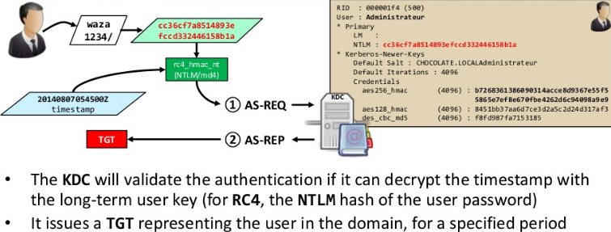

The KDC will validate the authentication if it can decrypt the timestamp with the long-term user key (for RC4, the NTLM hash of the user password)
It issues a TGT representing the user in the domain, for a specified period
This TGT is encrypted with a key shared between all KDC
RC4 for the krbtgt account (in example below): 310b643c5316c8c3c70a10cfb17e2e31
The KDC adds a Microsoft specific PAC to a structure with user's information
The KDC will create a Microsoft specific structure (PAC) with user information
This PAC is signed with the target key, and the KDC key
For a TGT, the target is also the KDC, so it is the same key for RC4
KDC keys are in the krbtgt account
